Manage Replications
Configure XDCR to replicate data between source and destination buckets. An XDCR replication allows bucket data to be replicated continuously from a specified bucket on a source database to a specified bucket on a target database.
Use the procedures on this page to create and manage XDCR (Cross Data Center Replication) between Capella databases. For general information on XDCR in Capella and how it works, see Cross Data Center Replication (XDCR).
Accessing Replications
Replications, which can be viewed and managed by users with the Project Owner role, can be accessed on the source database’s Settings screen, by clicking on the Replication tab, which is located in the navigation panel, at the left.
If no replication has yet been set up, a button for starting setup is displayed.
Note that if replications have already been defined for database, a summary of these is displayed in table format. For an example, see Observe an Ongoing Replication, below.
Create a Replication
An XDCR replication is created on the cluster that is to be the source of the data replication. This cluster is known as the source cluster, and it contains the data you want to replicate. Each replication targets a bucket on a different cluster, known as the destination cluster or target cluster, in which the data will be replicated.
To create a replication, you must have the Project Owner role for the projects that contain both the source and destination clusters.
|
Clusters hosted by Couchbase Capella support the following replications:
|
Note that source and destination buckets must have the same conflict resolution method configured. If the buckets use different conflict resolution methods, then the replication will fail to be created.
A replication can be created from one Capella database to any other. This is described immediately below, in Create a Replication Between Capella Databases.
A replication can also be created from an on-premises database to a Capella database: this procedure is described below, in Create a Replication to Capella from a VPN-Accessed Cluster.
Create a Replication Between Capella Databases
To create a replication using Capella databases, proceed as follows:
-
Go to Select Direction of Replication. Choose to create a One-way or a Two-way replication, by selecting the appropriate option. A one-way replication replicates data only from the source to the target. A two-way replication replicates data both from the source to the target, and from the target to the source. For example, to define a one-way replication, select One-way:
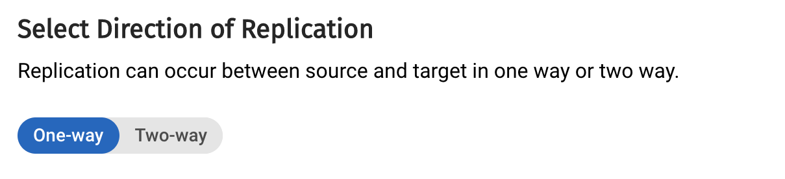 -
Go to Select Database. The source database is already determined by the database on which you are currently configuring the replication. The target database must be selected from the Target Database menu.
-
Go to Select Bucket. Each replication proceeds from a source bucket to a target bucket. Select these buckets from the Source Bucket and Target Bucket menus.
For example, if the source database and bucket are respectively named
test-dbandtravel-sample, and the target database and bucket are namedtest-db-2andtravel-sample-backup, the UI should be configured to appear as follows: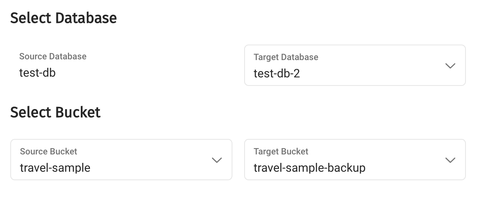 -
Go to Filter Documents. To apply a filter to the replication, select Yes. This displays an interactive field into which the filter expression can be entered.
To ensure that only documents that contain the value
United Statesfor the keycountry, and the valueMILE-AIRfor the keycallsign, enter the expressionREGEXP_CONTAINS(country, "United States") AND callsign = "MILE-AIR". For example: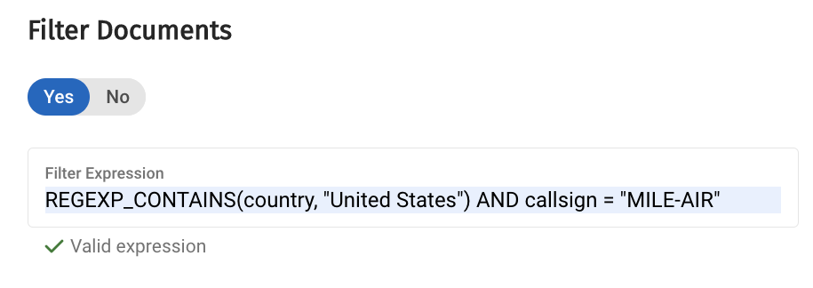Note that the expression must contain at least two keys. An error-notification appears on the console, if the expression is in any way invalid.
-
Go to Select Priority of Replication. Select High, Medium, or Low. The meaning of each option is described in the UI. Note that a setting only takes effect if there are multiple replications with different priorities.
-
Go to Set Network Usage Limit. This option allows an upper limit for network usage to be established. To establish an upper limit, select Enable. This displays an interactive field, into which the limit, in MiB per second, should be entered:
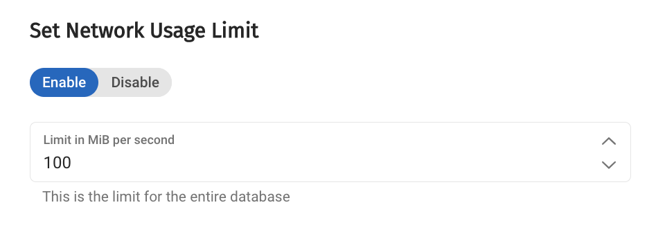Note that an established limit applies to all replications for the entire database. If no limit need be established, select Disable.
-
Go to Replicate All Scopes and Collections. If the replication is intended to replicate to the target all scopes and collections that have been defined on the source, allow the default Yes setting to remain. Note that for scopes and collections to be replicated in this way, each scope and collection must already exist with the same name on source and target.
If the replication is intended to replicate documents to a differently named combination of scope and collection on the target, the target scope and collection can be individually specified. To do this, select the No setting. The UI now presents an interactive Add Scope and Collection tab. When this is clicked on, the UI expands as follows:
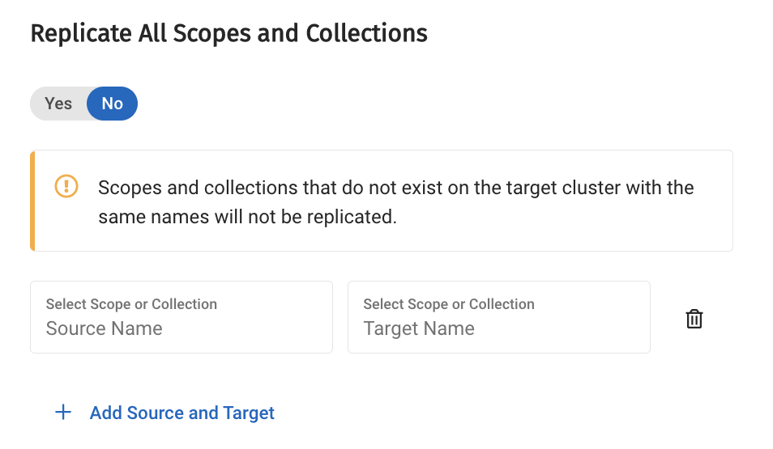Two interactive fields are now displayed, allowing a scope and collection to be specified for both source and target. When clicked with the mouse, each field presents a menu, from which selections can be made. The first selection is for a scope. For example, the scope on the source can be selected as follows:
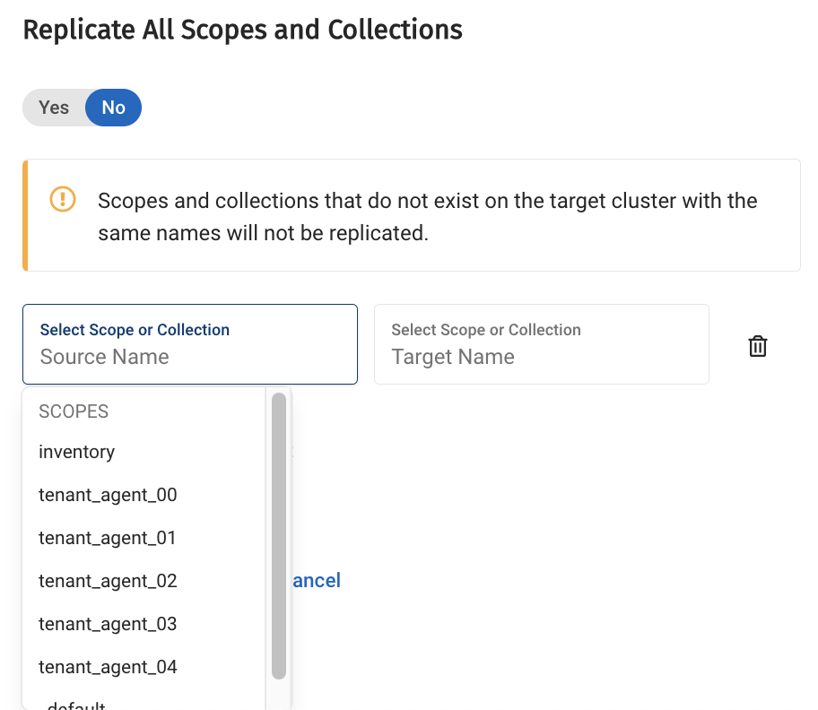After a scope has been selected, a further menu allows selection of a collection within the selected scope. For example:
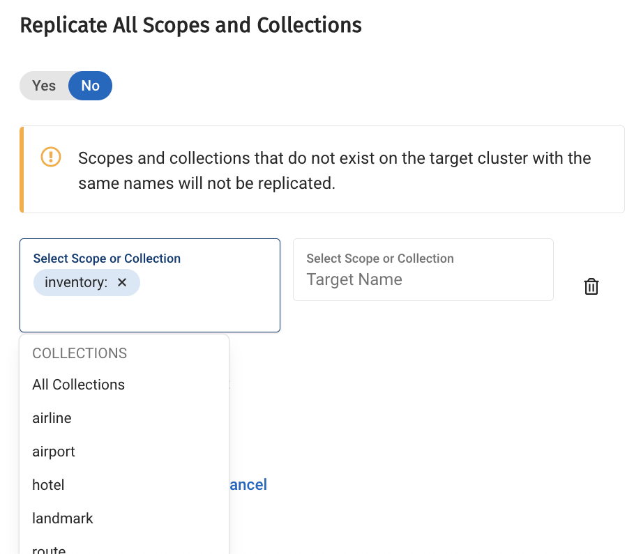Once appropriate selections have been made for source and target, the Replication All Scopes and Collections UI might appear as follows:
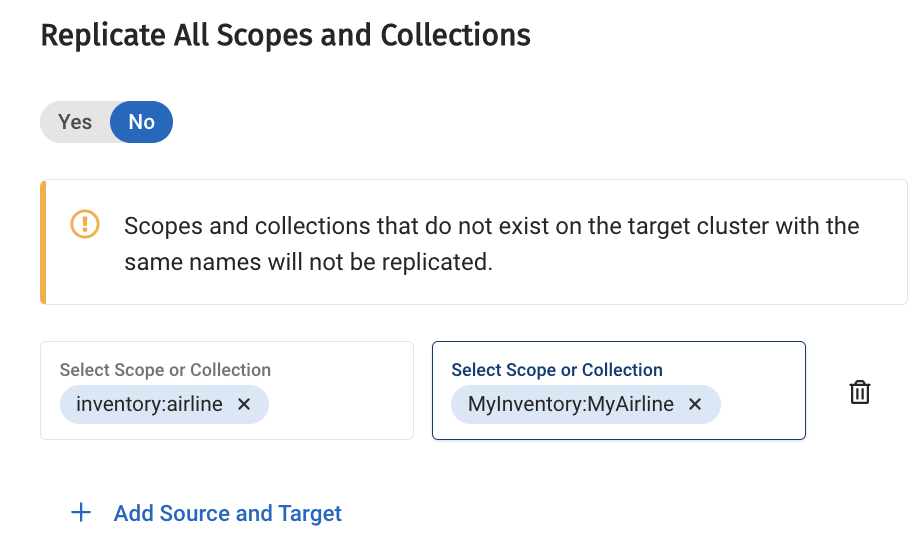 -
Click on the Setup Replication button, at the bottom of the screen, to start the replication:
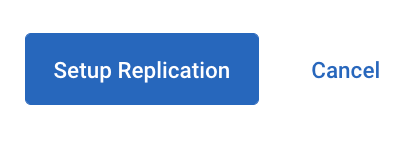
Notifications now appear, explaining the some time must now elapse, to allow setup to be performed. Once setup is complete, details of the new, ongoing replication are displayed in the UI.
Observe an Ongoing Replication
Once one or more replications are underway, these are displayed on the Replications screen. For example:
The process for defining an additional replication can be started by clicking the Setup Replication button.
Pause and Resume a Replication
Pausing an XDCR replication temporarily suspends the replication of data from the source to the target. Pausing a replication always occurs on the source cluster. Subsequent to being paused, a replication can be resumed.
To pause a replication, you must have the Project Owner role for the project that contains the source cluster.
Note that when pausing a bidirectional replication, only the replication from the current cluster will be paused.
To pause both directions of a bidirectional replication, you will need to pause the replication on both clusters individually.
Proceed as follows:
-
On the Replications screen, identify the ongoing replication that you wish to pause.
-
Click on the name of the source bucket for the replication. A summary of the replication is now displayed. For example:
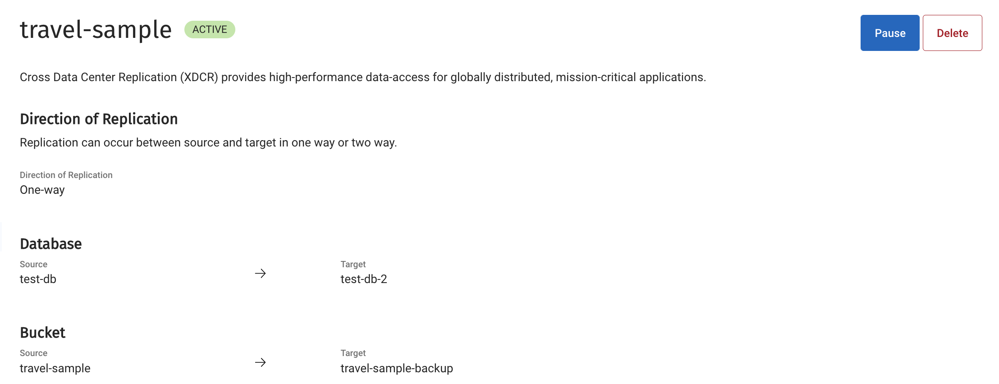 -
Locate the Pause button at the upper right. To pause the replication, click on the Pause button.
The replication is now paused. This is reflected in the upper area of the screen, which appears as follows:
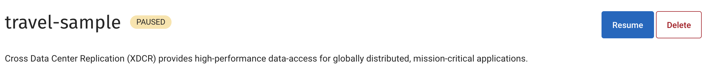
Note that the button previously labeled Pause is now labeled Resume. To resume the replication, click the Resume button.
Modify a Replication
Replications cannot be modified after creation. Desired modifications must be configured for an entirely new replication: with the old replication being deleted, if appropriate.
Delete a Replication
Deleting an XDCR replication stops the replication of data, and removes the defined replication from the cluster. Any replicated data will not be deleted.
To delete a replication, you must have the Project Owner role for the projects that contain both the source and destination clusters.
Note that if the replication is bidirectional, when the replication is deleted on the source, both directions of the replication are thereby deleted, and are removed from the Replications tab of both clusters.
Proceed as follows:
-
On the Replications screen, identify the ongoing replication that you wish to delete.
-
Click on the name of the source bucket for the replication. A summary of the replication is now displayed. For example:
-
Locate the Delete button at the upper right. To delete the replication, click on the Delete button.
A dialog appears, requesting confirmation:
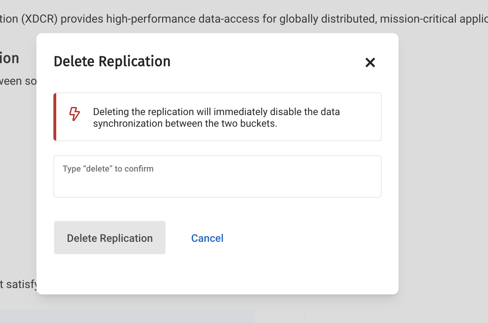To confirm, enter the word
deleteinto the interactive field. Then click on Delete Replication.The replication is now deleted, and is removed from the list of ongoing replications.
Create a Replication to Capella from a VPN-Accessed Cluster
You may have a cluster that you access through a VPN, such as an on-premises cluster behind a company firewall.
To set up XDCR from the on-premises cluster, follow these steps.
-
Add a Database User in your Cloud Cluster.
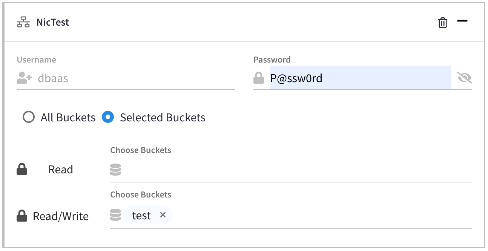 -
Whitelist the public IP of the VM
-
Get the public IP from your VM
sshinto your VM (on which Couchbase Server is running).# dig +short myip.opendns.com @resolver1.opendns.com67.212.150.204 -
Allowlist this IP in the Cloud Cluster
Clusters → < cluster name > → Connect → Add/View Allowed IPs
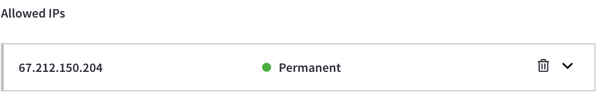
-
-
Get the hostname
-
Get the WAN Endpoint.
Clusters → < cluster name > → Connect → Copy
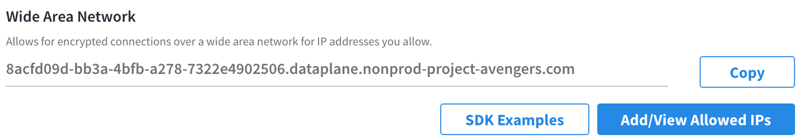 -
Get the hostname:
# nslookup -type=SRV _couchbases._tcp.8acfd09d-bb3a-4bfb-a278-7322e4902506.dataplane.nonprod-project-avengers.comServer: 172.23.201.5 Address: 172.23.201.5#53 Non-authoritative answer: _couchbases._tcp.8acfd09d-bb3a-4bfb-a278-7322e4902506.dataplane.nonprod-project-avengers.com service = 0 0 11207 cb-0000.8acfd09d-bb3a-4bfb-a278-7322e4902506.dataplane.nonprod-project-avengers.com. Authoritative answers can be found from: cb-0000.8acfd09d-bb3a-4bfb-a278-7322e4902506.dataplane.nonprod-project-avengers.com internet address = 100.26.70.215The hostname is:
cb-0000.8acfd09d-bb3a-4bfb-a278-7322e4902506.dataplane.nonprod-project-avengers.comWhen setting up a XDCR remote reference from your on-premise cluster Web Console, you must add port 18091 to the hostname. -
Test Connectivity
# curl -u dbaas:P@ssw0rd https://cb-0000.8acfd09d-bb3a-4bfb-a278-7322e4902506.dataplane.nonprod-project-avengers.com:18091/pools --insecure{"isAdminCreds":true,"isROAdminCreds":false,"isEnterprise":true,"allowedServices":["kv","n1ql","index","fts","cbas","eventing"],"isIPv6":false,"isDeveloperPreview":false,....
-
-
Copy the Root Certificate on the Cloud Server
Clusters → < cluster name > → Connect → [Security Certificate - Root Certificate] → Copy
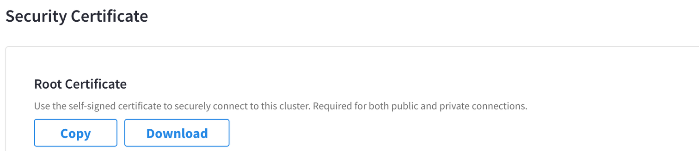 -
Set up XDCR Remote Reference
From your on-premises cluster Web Console.
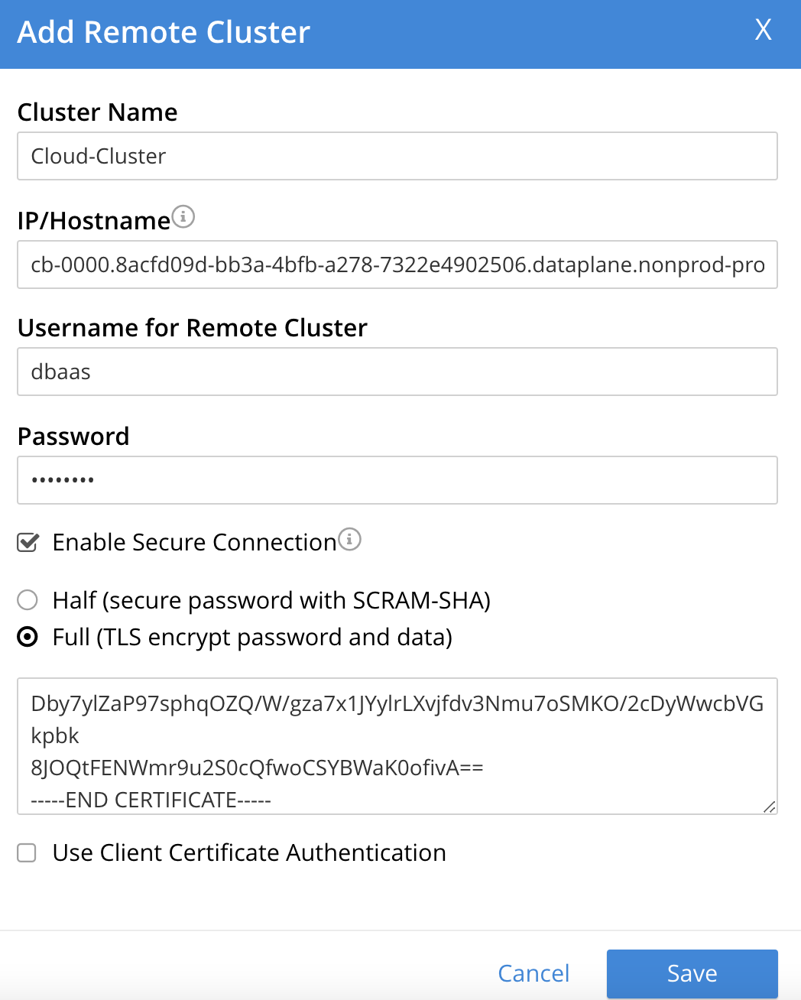-
Cluster Name: Any name
-
IP Hostname: From Step 3.2 and add port 18091
For example:
cb-0000.8acfd09d-bb3a-4bfb-a278-7322e4902506.dataplane.nonprod-project-avengers.com:18091 -
User name: From Step 1
-
Password: From Step 1
-
Cert pasted in Box: From Step 4
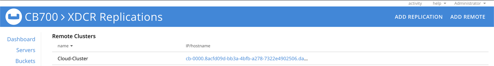
-
-
Set up XDCR Replication
From your on-premises cluster Web Console.
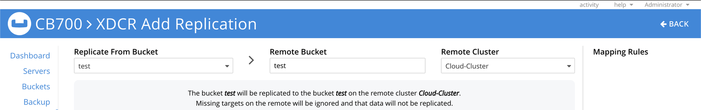Then:
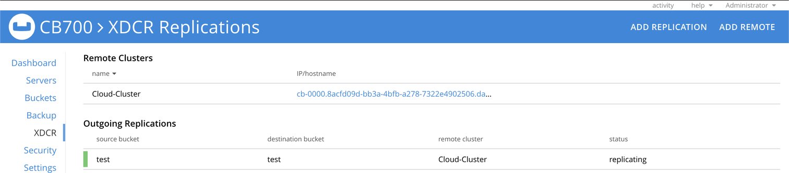